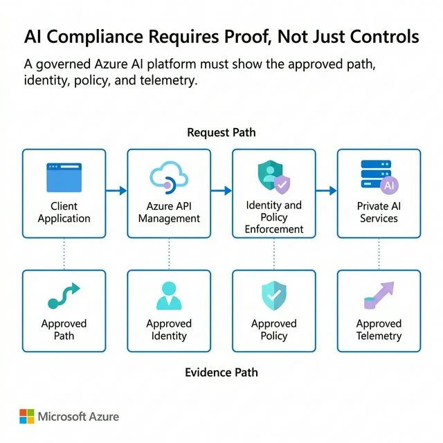

Contents
MIT found that 95% of enterprise AI pilots deliver no measurable return — not because the models are weak, but because nobody can say which agent touched what, who approved it, or what it cost. Microsoft's fix is a four-layer blueprint called the Citadel Governance Hub. It's genuinely good. On its own, it's not a governance program.
Written by Upendra Kumar, Microsoft Certified: Cybersecurity Architect Expert and Identity and Access Administrator Associate — the identity, gateway, and audit patterns discussed below are the same lens this analysis uses to evaluate agentic AI governance architectures end to end.
Executive Impact Summary
The Governance-Velocity Paradox
Every enterprise building agentic AI right now is running the same experiment. A business unit stands up an agent in Copilot Studio or Azure AI Foundry in a sprint. It works. Three more teams copy the pattern within a quarter, each with its own API key, its own model deployment, its own idea of what "approved" means. Nobody outside that team can answer a simple question: how many agents does this company actually have running in production right now?
Microsoft calls this the governance-velocity paradox — the tension between shipping AI fast and knowing what you shipped. It isn't hypothetical. MIT's Project NANDA surveyed 153 leaders and analyzed 300 public AI deployments in 2025 and found that 95% of generative AI pilots produced no measurable P&L impact, despite $30–40B in enterprise investment. The report's own conclusion wasn't that the models were the problem — it was that most pilots never integrated deeply enough into a real workflow to be accountable for anything. (That number has since been contested by critics who note correlation isn't causation on any single variable — fair. But it's the right order of magnitude for a pattern every architect who has sat in a security review already recognizes.)
Governance and velocity get framed as trade-offs. They aren't, structurally — but the plumbing to avoid the trade-off has never existed by default. That's the gap Citadel Governance Hub is built to close.
Composite Scenario
The following is a composite, illustrative walkthrough representative of a pattern seen repeatedly across regulated-industry AI programs — not a specific client engagement.
- Fictional Company: Northbridge Financial
- The Discovery: Internal audit found 14 production AI agents; the AI governance committee had approved 6
- The Platform Lead: owned the remediation
- The Board: asked for a governance plan within 30 days
Northbridge's audit team ran a routine review of cloud spend and found eight agents nobody in risk or compliance had signed off on — built by claims processing, marketing, and two different regional offices, each using its own Azure OpenAI deployment and its own API key stored in a config file. None of the eight were malicious. All eight were unaccountable: no owner of record, no data classification review, no way to answer "what can this agent read" without asking the engineer who built it and hoping they remembered.
The fix Northbridge landed on wasn't a new policy document — policies already existed and had simply been bypassed for speed. It was structural: a central gateway every agent call had to route through, an identity issued per agent instead of per application, and a registry that made "how many agents do we have" a query instead of a survey. Six weeks later, the board asked the same question audit had asked, and the platform team pulled up a dashboard instead of chasing eight engineers. That's the pattern Citadel Governance Hub packages as a reference architecture — not a new idea, but a productized, supported version of what Northbridge had to build by hand.
Architect's Corner: Uncontrolled Airspace vs. a Control Tower
Without a Hub: Uncontrolled Airspace
Every business unit is a pilot flying its own route, at its own altitude, with its own radio frequency. Each flight is individually fine. Nobody on the ground knows how many aircraft are up there, which ones are about to collide with a compliance boundary, or who to call when one goes dark.
- No shared registry — "how many agents do we have" requires a survey, not a query.
- No shared frequency — every team enforces its own version of "approved," inconsistently.
Citadel Hub: A Control Tower
Every aircraft still flies its own route — the tower doesn't fly the plane. But every aircraft checks in on the same frequency, carries a transponder that identifies it uniquely, and is visible on one radar screen. Local autonomy for the pilot; global visibility and control for the tower.
- One gateway, one registry — every agent shows up on the same board, the moment it's deployed.
- One identity model — "which agent did this" has a one-line, log-backed answer.
Inside the Hub: Four Layers
Strip away the product name and Citadel Governance Hub is a hub-and-spoke architecture applied to AI agents instead of virtual networks — a pattern most Azure architects already know from landing zones, now pointed at a fleet of autonomous actors instead of subscriptions.
The Governed AI Request Path

This is the shape every one of Citadel's four layers is enforcing: a request path that only reaches a model after passing through a gateway and an identity/policy check — and an evidence path, running in parallel, that proves it happened.
1. Governance Hub (Runtime Enforcement)
A hub-and-spoke deployment built on Azure API Management as the AI gateway. Every model call passes through it for identity validation, rate limiting, content filtering, and cost attribution. Spokes give teams autonomous build environments inside guardrails they can't opt out of.
2. AI Control Plane (Observability & Compliance)
Built on the Foundry Control Plane: end-to-end traces, automated red-teaming, and fleet dashboards that evaluate agent behavior continuously rather than at a single point-in-time review. This is what turns telemetry into an actual compliance answer.
3. Agent Identity (Enterprise Asset Management)
Microsoft Entra Agent ID assigns a unique identity to every agent — including ones discovered after the fact — with lifecycle controls and ownership. No agent runs anonymously at scale.
4. Security Fabric (Unified Protection)
Microsoft Defender contributes AI-specific threat detection and jailbreak monitoring; Microsoft Purview maps data-governance and PII controls onto every agent's activity. Identity, gateway, and telemetry converge here into one protection layer.
Two design choices are worth calling out to anyone evaluating this against a build-it-yourself approach. First, it's hub-and-spoke, not fully centralized — the gateway is one enforcement point, but each business unit keeps its own build environment, so governance doesn't become the bottleneck that pushes teams back into shadow AI. Second, guardrails as code means policy is enforced by the gateway automatically, not by a human remembering to check a checklist — which is the only way "continuous compliance" survives contact with a 200-agent fleet instead of a 6-agent pilot.
The Layer the Diagram Doesn't Show
Here's the part every vendor architecture diagram leaves out, because it isn't a box you can license: the hub enforces policy — it doesn't write it. Citadel gives you the pipes. It does not tell you which agents are high-risk enough to need human sign-off, what "approved" means for a claims-processing agent versus a marketing copy agent, or who owns that decision when Legal and Engineering disagree.
That's organizational work, and it's the actual reason most AI governance programs stall — not a missing gateway. Three roles tend to make or break the transition from "we bought the platform" to "we're actually governed," and they're worth naming explicitly, because they're also exactly the roles hiring managers are underinvesting in right now relative to how fast agent fleets are growing:
- The AI Governance Architect. Owns the risk taxonomy — which agent categories need what level of review — and translates it into the policies the gateway actually enforces. Without this role, "guardrails as code" defaults to whatever the first team that touched the config decided, which is not a policy, it's an accident.
- The Agent Identity / Platform Engineer. Owns the Entra Agent ID rollout, the registry, and the mapping from business-unit spoke to central hub. This is the same skill set that makes zero standing privilege work for agentic AI — per-agent identity, JIT access, and an audit trail that names the agent, not the gateway.
- The Policy-to-Code Translator. Sits between Risk/Compliance and Engineering and turns a regulatory obligation (EU AI Act high-risk classification, an internal model-risk framework, HIPAA) into an enforceable rule in the gateway. Microsoft's own ecosystem leans on partners like Credo AI and Saidot for exactly this translation layer — which tells you Microsoft doesn't consider it solved by the platform either.
Skip these roles and Citadel Governance Hub still does something useful — it gives you visibility into agent sprawl you didn't have before. But visibility into an ungoverned mess is not the same as governing it. The gateway will faithfully enforce whatever policy you hand it, including a bad one, at scale, with a clean audit trail proving you did it consistently.
The Citadel Readiness Sequence
Whether you adopt Citadel Governance Hub specifically or build the equivalent pattern on your own stack, the sequence is the same. It's staged so you can start on one business unit's agent fleet without a big-bang cutover.
What This Means for Your Next Board Review
Boards and regulators are converging on the same question for AI that they've asked about every other enterprise risk for decades: can you demonstrate control over what this system was allowed to do, and prove what it actually did? Fourteen agents nobody approved is not a technology gap — it's the same finding as fourteen unmanaged vendor contracts, described in newer language.
Citadel Governance Hub, or an equivalent hub-and-spoke pattern built on Azure's own primitives, is what makes "prove it" a five-minute query against a registry instead of a two-week reconstruction project involving every engineer who ever touched an agent. That's real, and it's worth adopting. But the platform is the plumbing, not the program. The organizations that get this right are staffing the governance architect, the identity engineer, and the policy translator roles at the same time they stand up the gateway — not eighteen months later, after the first audit finding forces the issue.
Sources & Reference Architectures
The claims and figures in this piece are drawn from primary sources — verify against your own environment before treating any vendor figure as guaranteed:
- Azure-Samples/foundry-citadel-platform (the reference implementation this article analyzes)
- Microsoft named a Leader in the IDC MarketScape for Unified AI Governance Platforms (Microsoft Security Blog, January 2026)
- Gartner: Global AI Regulations Fuel Billion-Dollar Market for AI Governance Platforms (February 2026 press release — source for the $492M → $1B and 75%-of-economies figures)
- The GenAI Divide: State of AI in Business 2025 (MIT Project NANDA — source for the 95% pilot-failure figure)
- Agent Identity Blueprints in Microsoft Entra Agent ID (the identity layer underneath Citadel's Layer 3)
Ready to operationalize your Azure journey?
If your organization is staring at a Citadel Governance Hub slide deck and wondering who actually builds the identity, policy, and gateway layers underneath it, that's the exact conversation worth having.